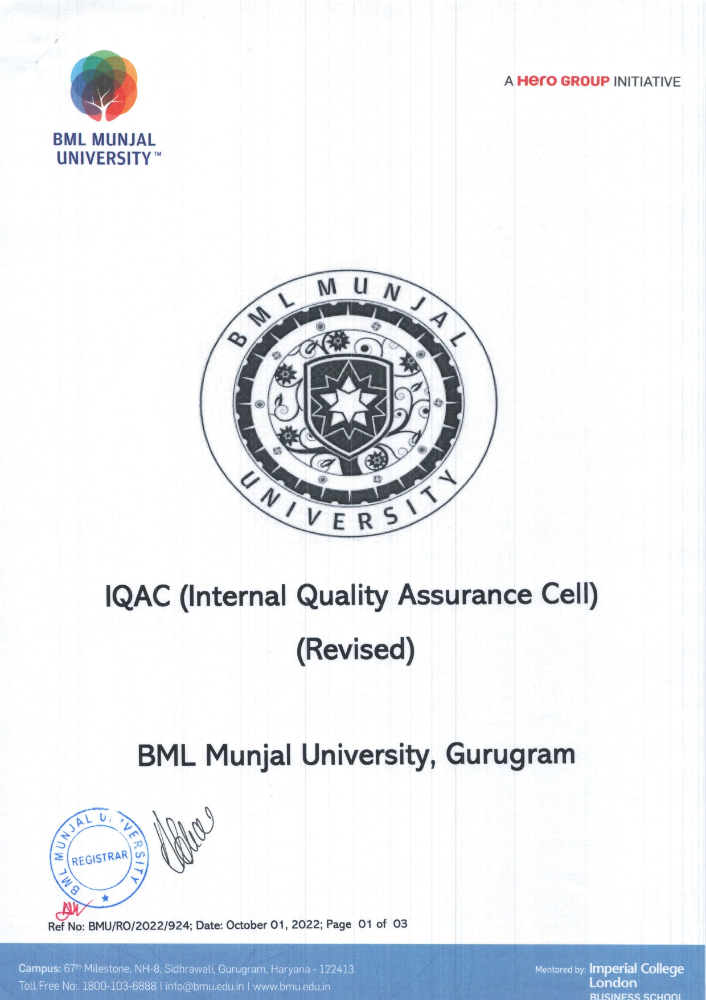
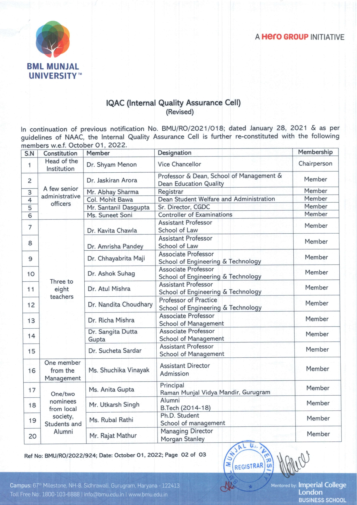
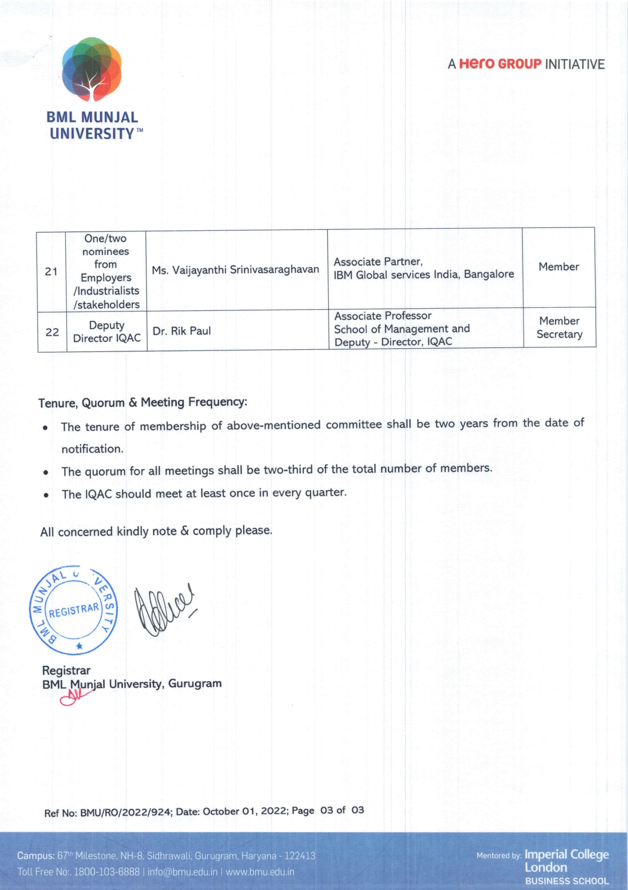

IQAC Composition
IQAC Cell
About IQAC
IQAC Meetings
NAAC Documentation
Awards & Achievements
OBE
5 Years Strategy Plan
Research
University Organogram
Institutional Distinctiveness
Institutional Best Practice
Feedback & Action Taken Report
Institutional Policies/SOPs/Regulations
Committees
ERP
Capacity Development and skills enhancement activities
NIRF
  
View PDF